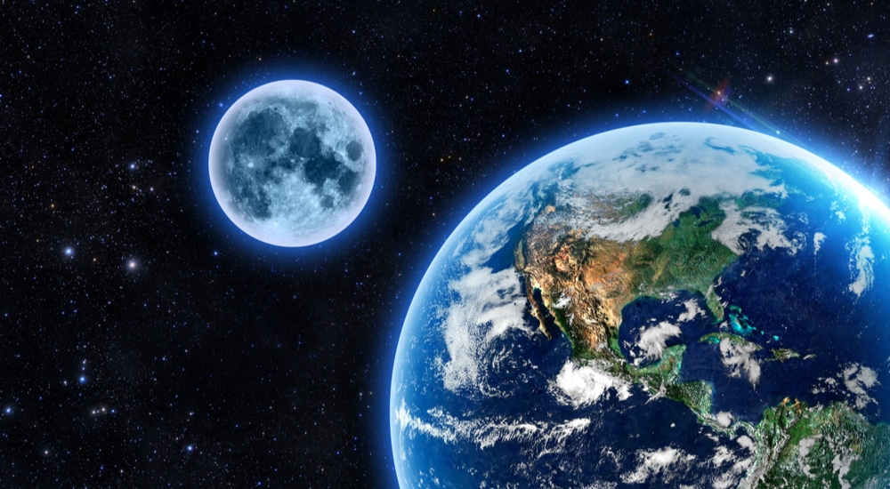

Nasa Television
Nasa Lives

Satélite "morto" da Nasa retorna à Terra após 38 anos.
Um satélite extinto da NASA caiu de volta à Terra após 38 anos orbitando o planeta. O Earth Radiation Budget Satellite, conhecido como ERBS, foi lançado em 1984 a bordo do ônibus espacial Challenger.
Até 2005, os dados do ERBS ajudaram os pesquisadores a investigar como a Terra absorveu e irradiou energia do Sol e mediu as concentrações de ozônio, vapor d’água, dióxido de nitrogênio e aerossóis na estratosfera da Terra. O satélite excedeu em muito sua expectativa de vida de dois anos, operando por um total de 21 anos. O Departamento de Defesa dos EUA confirmou que o ERBS reentrou na atmosfera da Terra no domingo às 23h04, no horário local (01h04 no horário do Brasil) sobre o Mar de Bering, de acordo com um comunicado da NASA. Não ficou imediatamente claro se partes do satélite sobreviveram à reentrada. Esperava-se que a maior parte do satélite queimasse enquanto se movia pela atmosfera. A NASA calculou que o risco de danos a qualquer pessoa na Terra era muito baixo – aproximadamente 1 em 9.400.
Um instrumento a bordo do ERBS, o Stratospheric Aerosol and Gas Experiment II (SAGE II), coletou dados que confirmaram que a camada de ozônio está diminuindo em escala global, disse a NASA. Esses dados ajudaram a moldar o Acordo do Protocolo de Montreal, um acordo internacional assinado em 1987 por dezenas de países, que resultou em uma diminuição dramática em todo o mundo no uso de clorofluorcarbonos (CFCs) destruidores de ozônio – produtos químicos usados comumente em aerossóis, refrigeração e condicionadores de ar. Se a proibição dos CFCs não tivesse sido acordada, o mundo estaria a caminho de um colapso da camada de ozônio e de 2,5 graus Celsius adicionais de aquecimento global até o final do século, segundo um estudo de 2021. Hoje, o SAGE III na Estação Espacial Internacional coleta dados sobre a saúde da camada de ozônio.
,